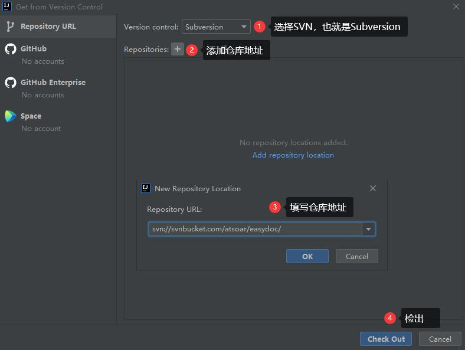
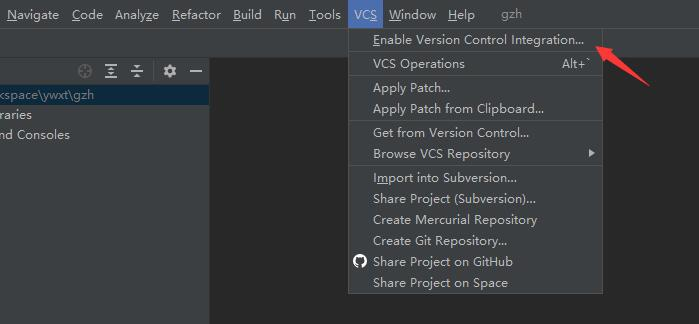
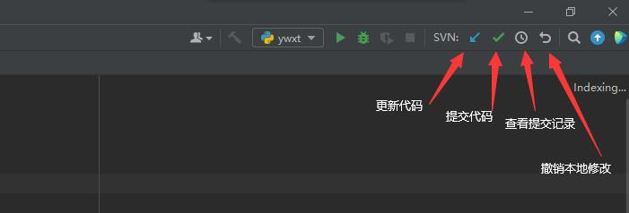
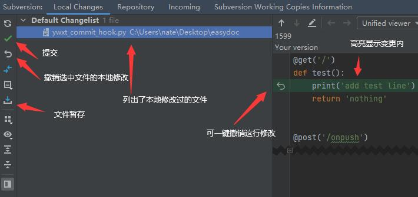
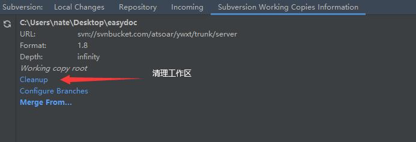

idea使用SVN教程
本文讲解如何在IDEA中使用 Subversion 做代码版本管理，教你快速学会一些常用操作，例如：检出、提交、更新、查看变更内容等
本文的 SVN 服务端将使用 SVNBucket，如果你没有SVN的服务端，可以先注册一个。
开启 SVN 版本管理
打开 IDEA 时，会有一个弹窗，如果我们还没有检出代码，可以选择从 SVN 获取代码
注意这里要选择 Subversion 也就是 SVN，然后添加我们的仓库地址，确定。然后就可以把我们在SVN仓库里的代码检出了。

在检出时，可能会弹出以下弹窗，我们要选择1.8版本以上
如果你的项目代码一早就使用其他 SVN 客户端检出了，那我们可以用 IDEA 打开这个项目，然后开启 SVN 管理，如下图：

注意开启时，我们要选择使用 Subvesion
SVN 常用操作
如果你能看到如下图的图标，说明你已经成功集成了 SVN 版本管理，在这里我们可以非常方便的进行代码的更新、提交、查看提交记录等操作

点击提交代码，最上面是本地变更的文件列表，默认是打勾的，如果你不想提交某个文件，可以把勾去掉。
中间是填写提交描述内容，方便别人知道你本次提交的内容，这个会在我们查看提交历史时显示出来。
底部显示了我们选中文件的diff，会高亮显示变动的行
另外如果有需要我们可以勾选Auto update after commit，这样在每次提交成功后会自动更新下本地代码
另外在idea的左下角也会多一个Subversion的tab，我们可以在这里看到更多信息
如下图，Local Changes显示的是本地的一些变动内容：

在这里，我们可以快速的查看到我们本地修改了什么文件，每个文件改了什么内容，并且有高亮显示修改的行，还能快速撤销修改，提交代码，非常的方便。
有个功能叫文件暂存，可能很多人没用过，它是可以把我们的本地代码修改暂时放到一个暂存区，不用提交到SVN服务端，等我们完成工作后再恢复过来。
典型的一个应用就是有时候你改了很多代码，代码跑不起来，但是需要紧急发个版本或者修复一个bug，这时候你不方便提交代码，就可以选择暂存你本地修改过的代码到置物架，等你修复完bug后再来恢复你的代码，想了解更多，这里有个视频教程
第二个tabRepository显示的是我们的一些提交记录，如下图：
第三个tabIncoming在有新的内容可以更新时会显示出来，会列出来我们还未更新的一些提交记录，可以快速预览下，非常方便
第四个tab显示的是我们工作区的一些信息，这里有个我们常用的功能，就是清理工作区，在我们工作区出现一些问题时，这个清理经常用到
